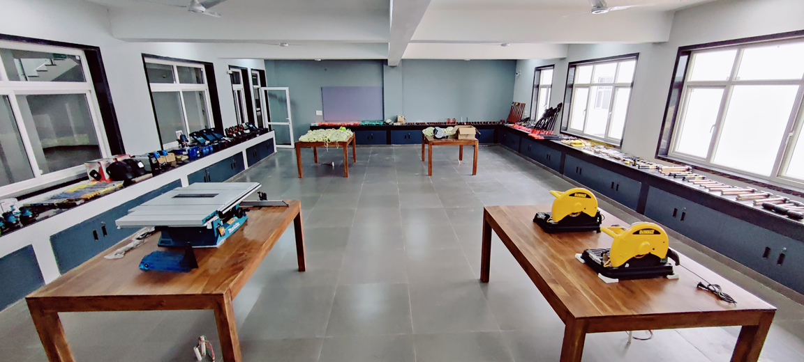
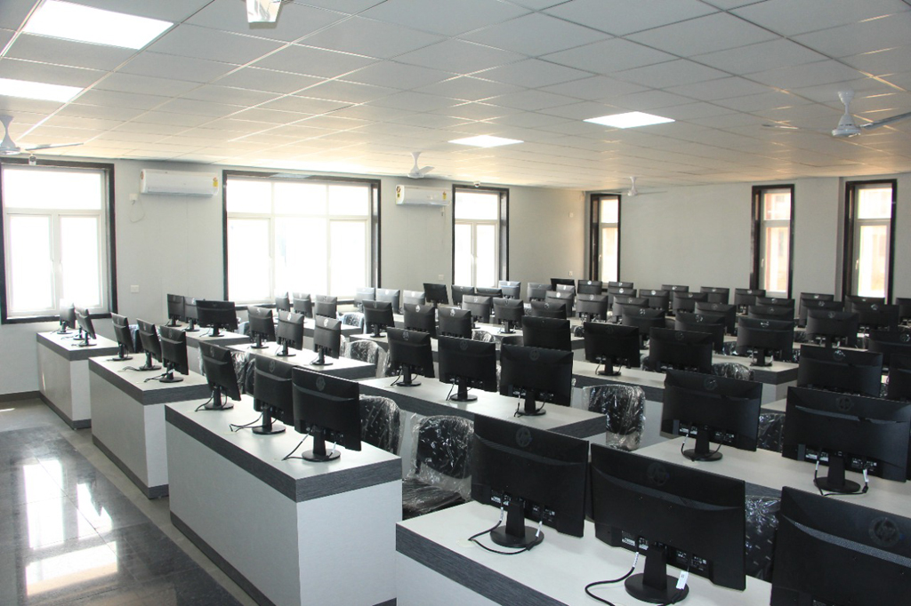
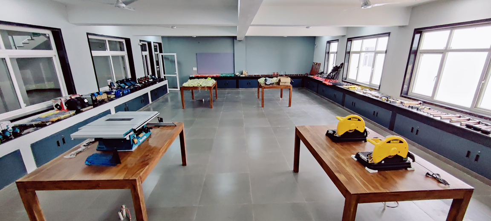
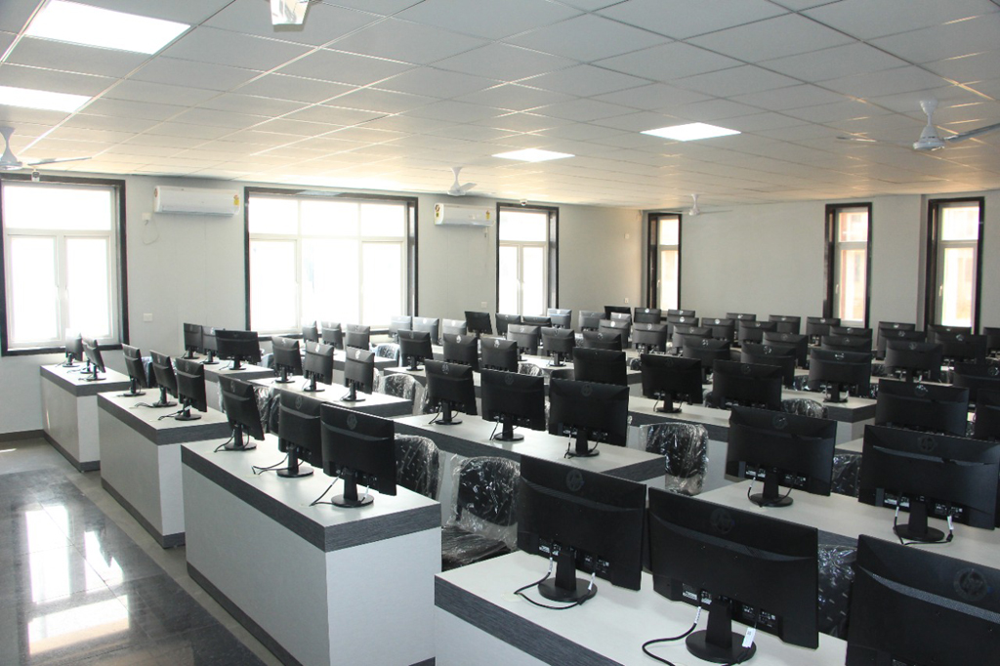

|
Vision and Mission
Vision of Faculty of Management Studies (FMS-WISDOM)
at Banasthali Vidyapith is to prepare women for enlightened leadership roles in
all walks of life.
Institute's mission is to contribute towards development of
women leadership that would play active role in society-building,
entrepreneurship and
management of organizations and institutions in consonance
with nation's spiritual and cultural heritage and its own context.
The following represents the five foundational
principles or the Panchsiddhanta of WISDOM:
- WISDOM acts as strategic think-ahead forum for women'sissues in management of society, organizations and individuals
- WISDOM facilitates creation of future enlightened leadership among women
- WISDOM trains the young minds for managerial responsibilities and entrepreneurial ventures
- WISDOM conducts action-based research
- WISDOM promotes intellectual self-reliance
In consonance with its foundational principles, the following are the broad objectives of the institute:
1. To train women for managerial positions.
2. To train women in entrepreneurial tasks of setting up
industry, organizations and institutions
3. To undertake research and consultancy with a view to augment
knowledge base keeping in view the specific requirements of women's issue and
cultural moorings.
|
 


